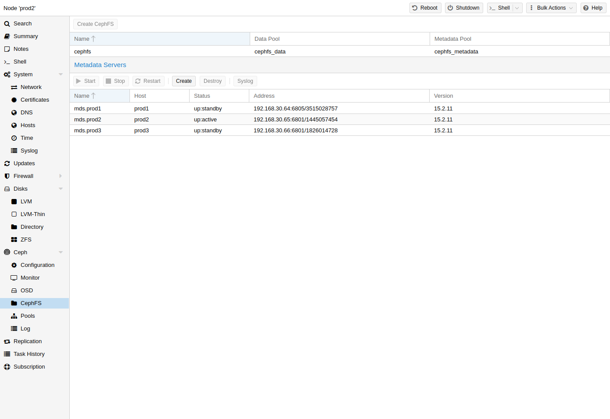

Ceph also provides a filesystem, which runs on top of the same object storage as
RADOS block devices do. A Metadata Server (MDS) is used to map the
RADOS backed objects to files and directories, allowing Ceph to provide a
POSIX-compliant, replicated filesystem. This allows you to easily configure a
clustered, highly available, shared filesystem. Ceph’s Metadata Servers
guarantee that files are evenly distributed over the entire Ceph cluster. As a
result, even cases of high load will not overwhelm a single host, which can be
an issue with traditional shared filesystem approaches, for example NFS.

Proxmox VE supports both creating a hyper-converged CephFS and using an existing CephFS as storage to save backups, ISO files, and container templates.
CephFS needs at least one Metadata Server to be configured and running, in order
to function. You can create an MDS through the Proxmox VE web GUI’s Node
-> CephFS panel or from the command line with:
pveceph mds create
Multiple metadata servers can be created in a cluster, but with the default
settings, only one can be active at a time. If an MDS or its node becomes
unresponsive (or crashes), another standby MDS will get promoted to active.
You can speed up the handover between the active and standby MDS by using
the hotstandby parameter option on creation, or if you have already created it
you may set/add:
mds standby replay = true
in the respective MDS section of /etc/pve/ceph.conf. With this enabled, the
specified MDS will remain in a warm state, polling the active one, so that it
can take over faster in case of any issues.
This active polling will have an additional performance impact on your
system and the active MDS.
Multiple Active MDS. Since Luminous (12.2.x) you can have multiple active metadata servers
running at once, but this is normally only useful if you have a high amount of
clients running in parallel. Otherwise the MDS is rarely the bottleneck in a
system. If you want to set this up, please refer to the Ceph documentation.
[32]
With Proxmox VE’s integration of CephFS, you can easily create a CephFS using the web interface, CLI or an external API interface. Some prerequisites are required for this to work:
Prerequisites for a successful CephFS setup:
After this is complete, you can simply create a CephFS through
either the Web GUI’s Node -> CephFS panel or the command-line tool pveceph,
for example:
pveceph fs create --pg_num 128 --add-storage
This creates a CephFS named cephfs, using a pool for its data named
cephfs_data with 128 placement groups and a pool for its metadata named
cephfs_metadata with one quarter of the data pool’s placement groups (32).
Check the Proxmox VE managed Ceph pool chapter or visit the
Ceph documentation for more information regarding an appropriate placement group
number (pg_num) for your setup [25].
Additionally, the --add-storage parameter will add the CephFS to the Proxmox VE
storage configuration after it has been created successfully.
Destroying a CephFS will render all of its data unusable. This cannot be undone!
To completely and gracefully remove a CephFS, the following steps are necessary:
Unmount the CephFS storages on all cluster nodes manually with
umount /mnt/pve/<STORAGE-NAME>
Where <STORAGE-NAME> is the name of the CephFS storage in your Proxmox VE.
Now make sure that no metadata server (MDS) is running for that CephFS,
either by stopping or destroying them. This can be done through the web
interface or via the command-line interface, for the latter you would issue
the following command:
pveceph stop --service mds.NAME
to stop them, or
pveceph mds destroy NAME
to destroy them.
Note that standby servers will automatically be promoted to active when an
active MDS is stopped or removed, so it is best to first stop all standby
servers.
Now you can destroy the CephFS with
pveceph fs destroy NAME --remove-storages --remove-pools
This will automatically destroy the underlying Ceph pools as well as remove the storages from pve config.
After these steps, the CephFS should be completely removed and if you have other CephFS instances, the stopped metadata servers can be started again to act as standbys.